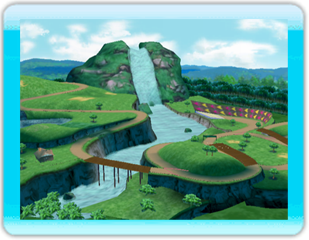

１．【Family Circuit】
Beginner: Flower Road
⇒Maybe we should take the turns hugging the inside.
Intermediate: Happy Up-Down
⇒Several sharp turns...can you handle it?
Advanced: Fly Highway
⇒Use the platform and jump onto the highway!
２．【Frozen Lands】
Beginner: Solid Lake
⇒Don't fall in the open areas of the ice!
Intermediate: Doki-doki Tunnel
⇒You'll enter a snowy tunnel after climbing the hill!
Advanced: Snowy Slopes
⇒Climb up the slope then race your way down.

３．【Lost Forest】
Beginner: Country Road
⇒Navigate your way through the twists and turns.
Intermediate: Rabbit Circuit
⇒Do I see a bunny? Watch out for the ears!
Advanced: Downhill River
⇒Fly to the top of the mountain!
４．【Amusement Park】
Beginner: World Bazaar
⇒Race through a shopping mall!
Intermediate: Merry-Go-Round
⇒There are lots of turning parts! Don't get dizzy.
Advanced: Go-Go Rollercoaster
⇒Soar through the skies with the rollercoaster!